Bring a modern “Configure your document layout” experience to Odoo 19: pick a layout, a table style and a font, then give every quotation, order, RFQ, transfer, invoice and journal entry its own design with the fields you choose – custom fields and Arabic included.
Standard Odoo 19 lets you pick one layout and two colors for every document of the company. Anything more means Studio (Enterprise) or XML.
x_ fields included.No code, no Studio. Documents without a design simply keep the company layout.
Screenshots were taken on a test database with a demo company, Nova Office Trading Co. (Riyadh), quotation S00059 for Al Noor Interiors (8 lines with sections, a custom Project Code and a custom Line Note field) and its Arabic twin S00060. All PDFs are the module’s real output.
Settings › PDF Designs › Document Designs and Fonts per Language; company defaults in Settings › General Settings › Configure Document Layout and in the company form, tab PDF Design.
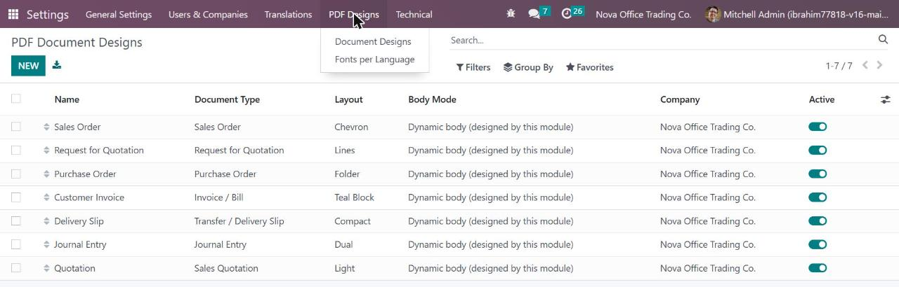
Layout, Tables and Text are picked as buttons, with a live preview. Picking a template design also applies its matching palette and header/footer heights. Below: Color Palette, Surface Color, Border Color, Table Density, Striped Lines and the header and footer switches.
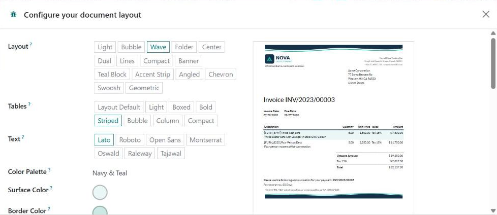
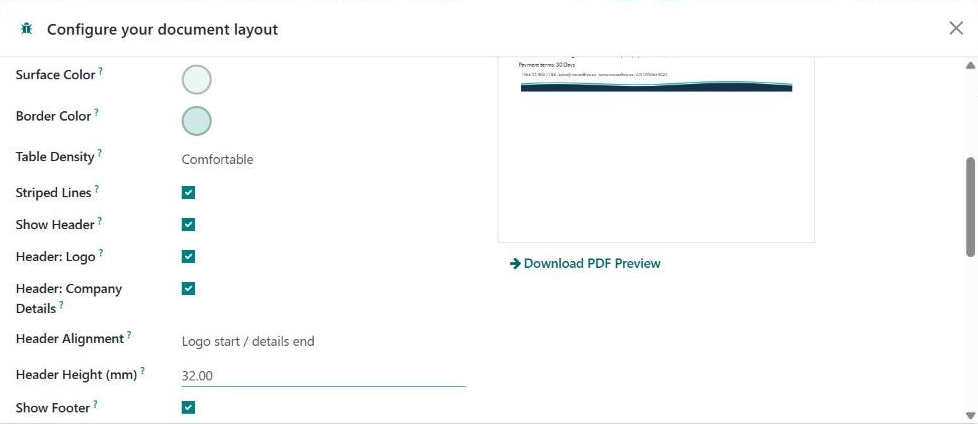
Light, Bubble, Wave, Folder, Center, Dual, Lines and Compact. Shapes (bubbles, waves, folder tab) are drawn in your own colors and mirror automatically for right-to-left documents.
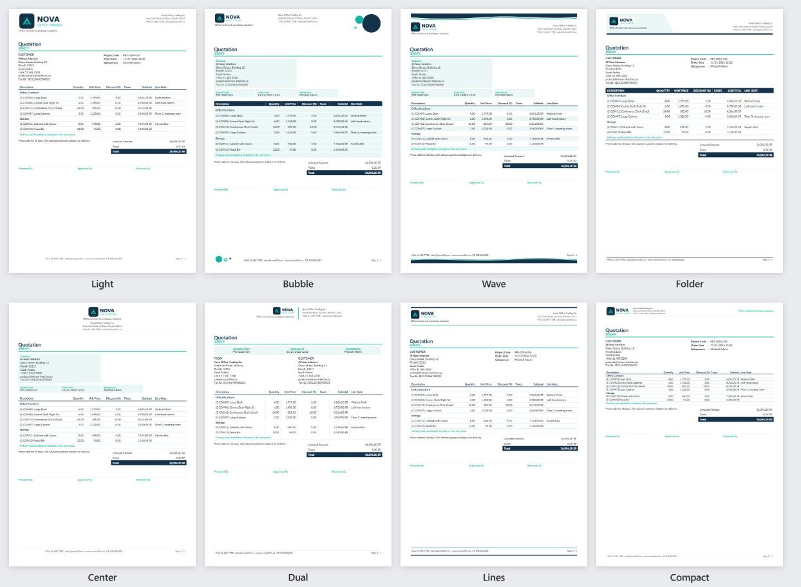
Banner, Teal Block, Accent Strip, Angled, Chevron, Swoosh and Geometric – classic quotation templates with title banners, From/To blocks, field strips and thank-you footers. Each one also arranges the document body its own way.
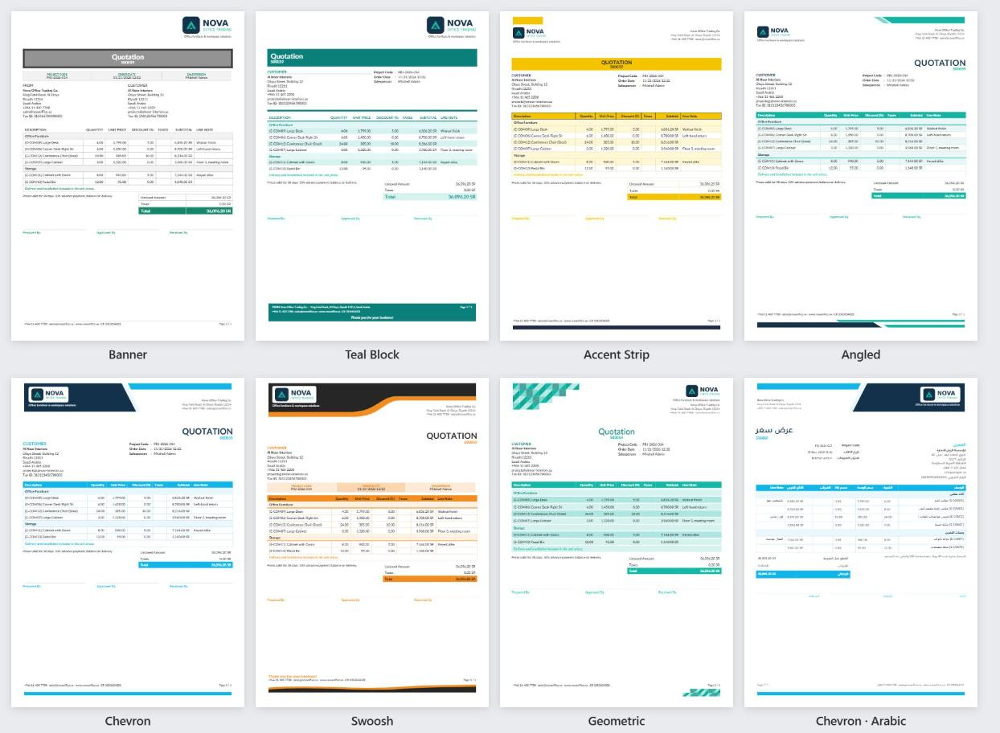
Light, Boxed, Bold, Striped, Bubble, Column and Compact, plus Layout Default. The style applies to the module’s lines table and to Odoo’s own report tables, at company level or per document.
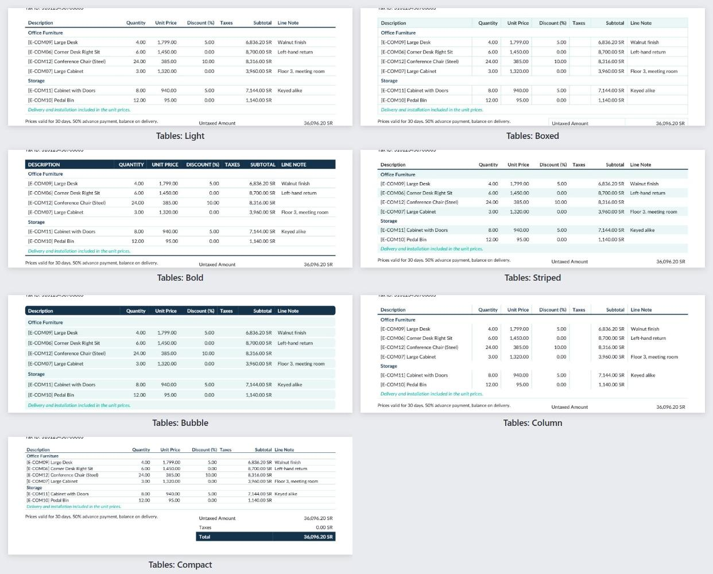
For Sales Quotation, Sales Order, Request for Quotation, Purchase Order, Transfer / Delivery Slip, Invoice / Bill and Journal Entry (a new Journal Entry (PDF) report is included). Each design sets its Layout, Body Mode, Tables, density, colors, header and footer – every option can stay on Company Default. Preview PDF prints the latest document of that type.
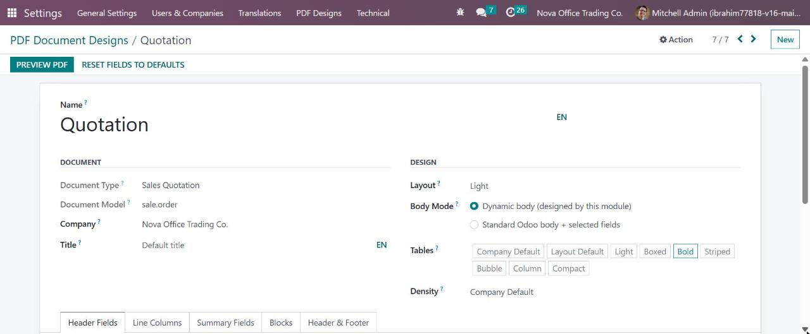
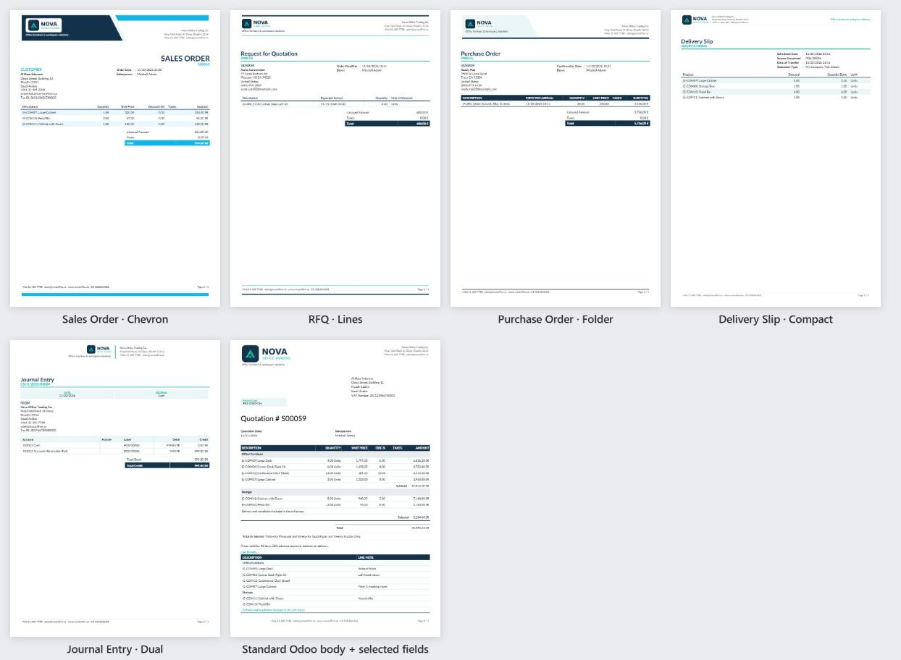
Tabs Header Fields, Line Columns and Summary Fields: drag to reorder, rename with a translatable Label, align columns, and pick any field of the document – fields added by other apps or created as x_ custom fields appear in the same list. Reset Fields to Defaults reloads a sensible starting set.
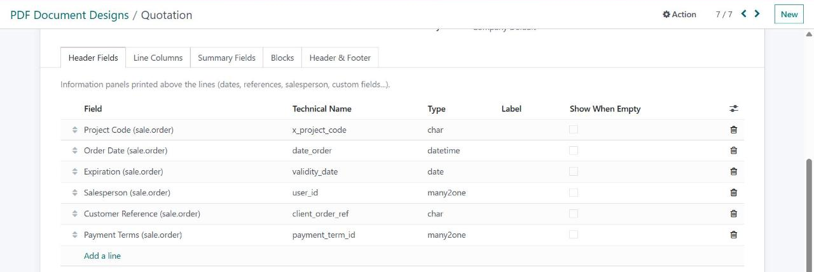
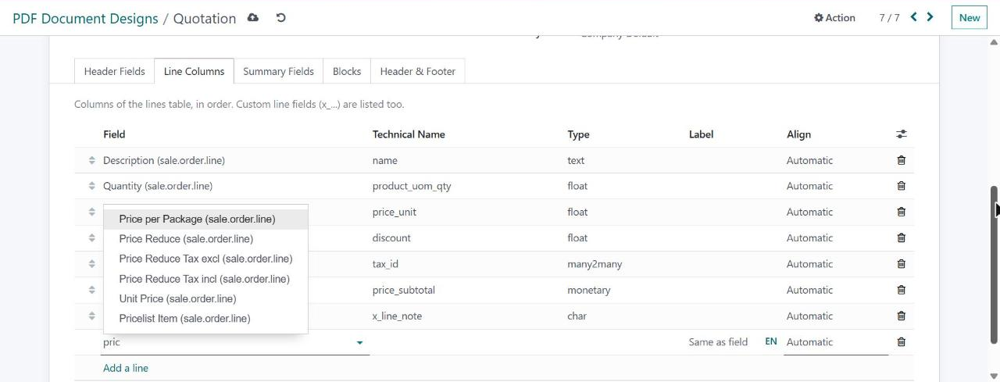
With Body Mode › Dynamic body the module renders the title, customer and delivery address, your header fields, the line columns with sections and notes, the totals, notes/terms and optional Signature Boxes. Shown: Light layout with Bold tables.
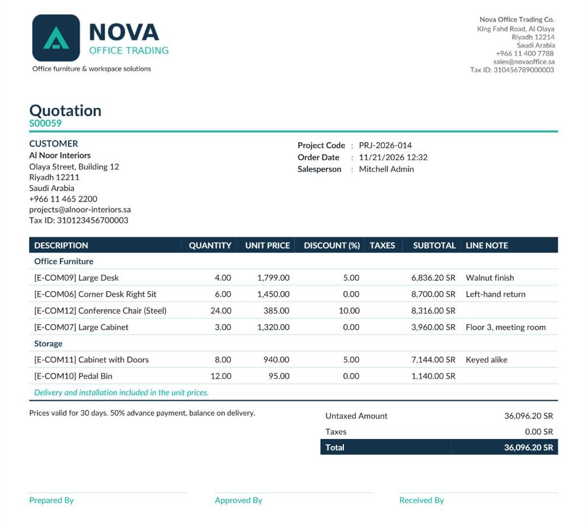
Each PDF follows the customer’s language: right-to-left direction, mirrored layout and shapes, translated titles and labels. Fonts per Language sets the font, direction and size per language and optionally per document; Add Rules for Active Languages creates them in one click. Numbers, amounts, phone numbers and Latin names are isolated so they are never scrambled inside Arabic text.
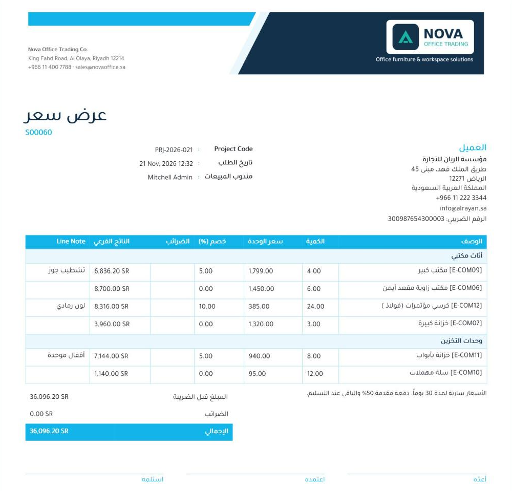
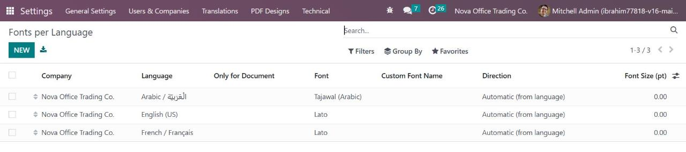
The company tab PDF Design holds the defaults every design falls back to: colors, Tables, density, line numbers, font size, header (logo, company details, tagline, alignment, height, spacing) and footer (page numbers, footer text, thank-you line, height, Auto Page Margins).
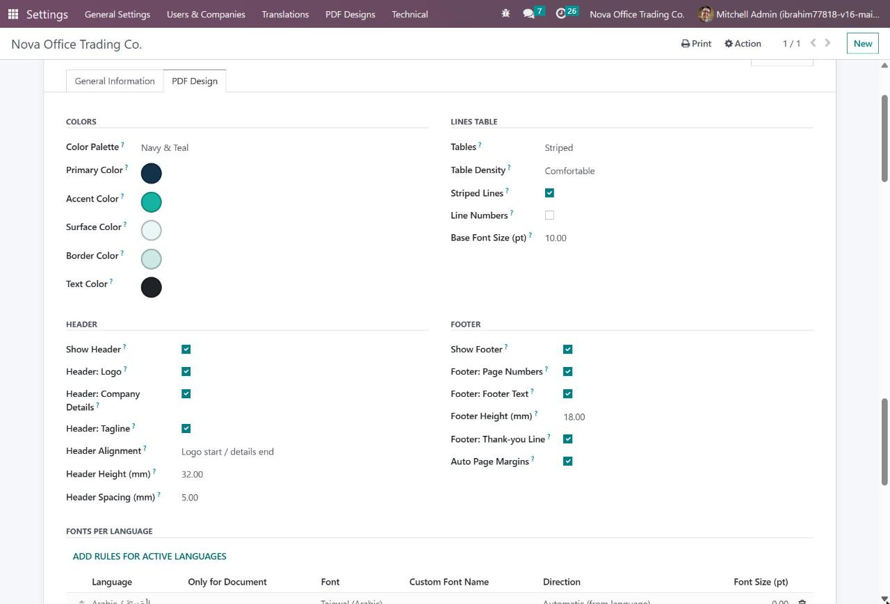
Found and fixed while printing real documents in English and Arabic.
#RRGGBB and font names sanitized before they reach the PDF style sheet.Designing is an administrator task; printing works for everyone who can open the document.
| Who | Can |
|---|---|
| Administration / Settings | Create and edit document designs, fields and font rules; use the PDF Designs menu and the company PDF Design tab. |
| Internal users | Read designs so their PDFs print with them; fields they are not allowed to read are left out of their PDFs. |
| Multi-company | Record rules limit designs and font rules to the user’s allowed companies. |
Non-invasive: QWeb view inheritance and model extensions only, no Odoo core file touched.
| Odoo version | 19.0, Community and Enterprise |
| Depends on | web, sale, purchase, stock, account |
| Python dependency | None |
| Menus | Settings › PDF Designs › Document Designs · Fonts per Language |
| Settings | Settings › General Settings › Configure Document Layout · Companies › tab PDF Design |
| Reports covered | Quotation / Order, RFQ, Purchase Order, Delivery Slip, Picking Operations, Invoices & Bills, Journal Entry (new) – plus the layout of any report using the standard external layout |
| Models | pdf.design.profile, pdf.design.field, pdf.design.font.rule, pdf.design.engine; extends res.company, base.document.layout, report.layout, ir.actions.report |
| Performance | Designs cached per company, document type and language; line values read column by column on the whole recordset |
| Automated tests | 32 TransactionCase tests: all reports and layouts, custom fields, Arabic/RTL fonts, direction and dates, settings validation, payment communication, Saudi ZATCA QR code, fallbacks and failure safety, margins, duplicates, country templates, cache and SQL query-count bounds |
| Languages | English, Arabic |
| License | LGPL-3 |
Questions, a demo, or an adaptation to your own process? Get in touch.
✉ ibrahim.yahiah@gmail.com LinkedIn: Ibrahim YahiaAuthor: Ibrahim Yahia · License: LGPL-3